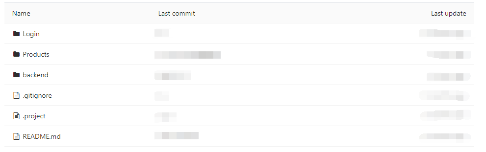
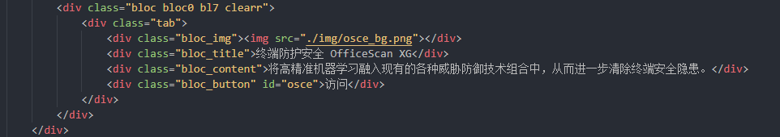
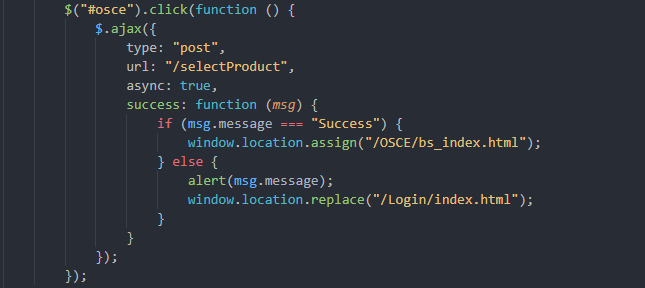
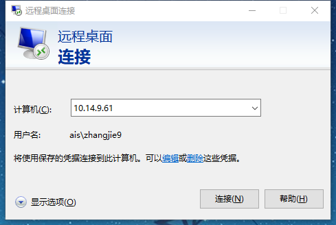
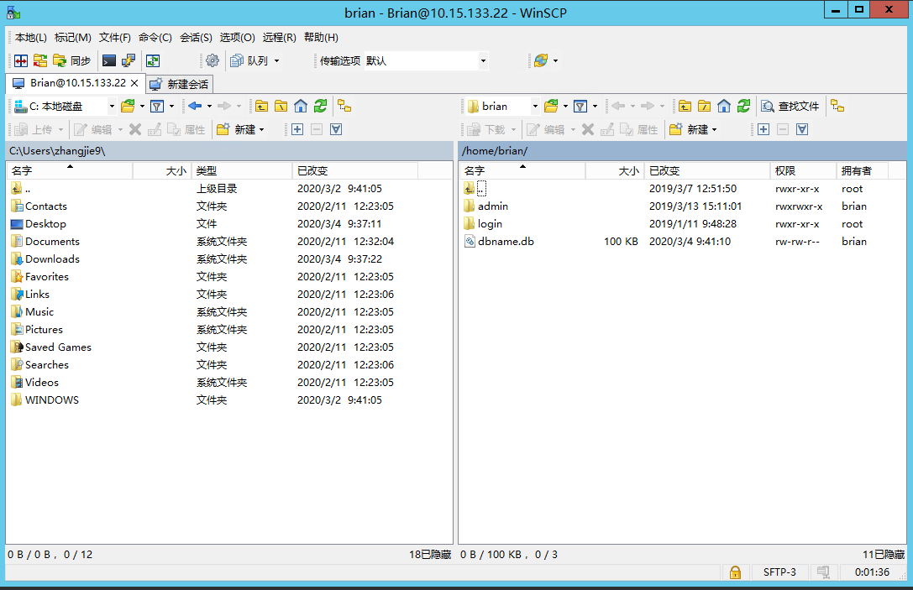
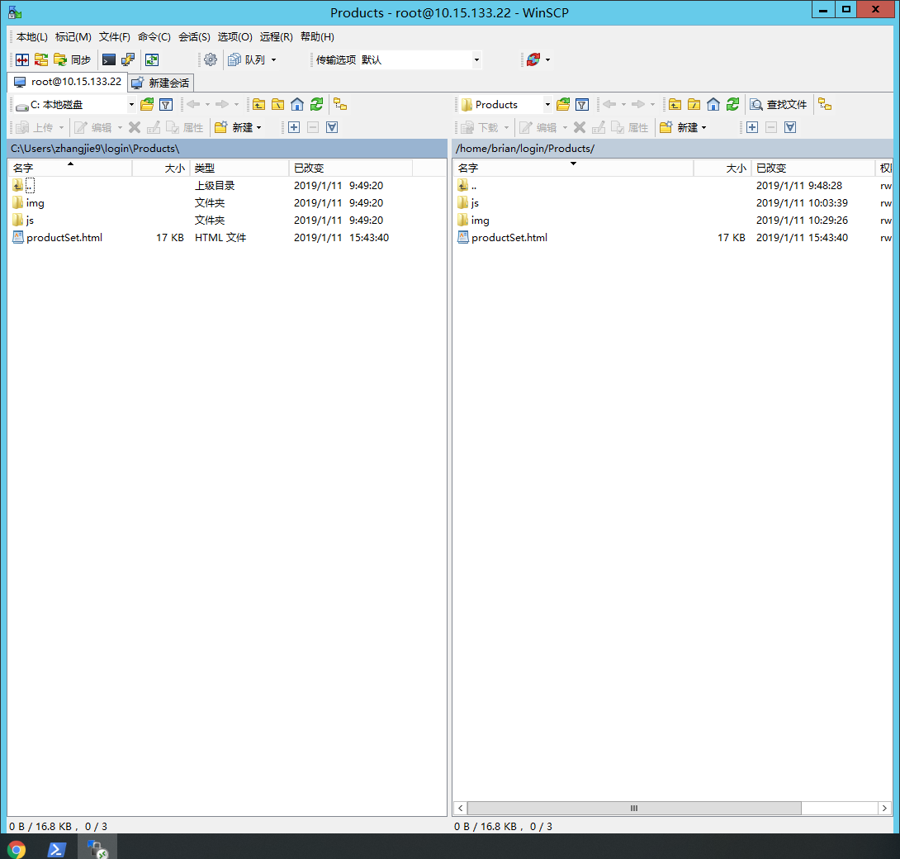

1.1. DeploymentOfExternamNetWork / 项目部署外网步骤¶
- date
2019-01-14
- tags
node,Linux
- authon
Zhang Jie
1.1.1. 获取项目¶
首先从gitlab中获取login项目，地址为http://172.17.6.44/prototype/login 这里的login项目是所有子项目的入口，目录结构如下图所示：

其中主要做修改的部分为Products目录和backend目录
1.1.2. 修改页面¶
在Products目录下的productSet.html文件中添加子项目入口和点击事件请求，例如：


其中img标签内为子项目对应的图片,应事先将需要的图片上传到Products下的img文件夹中。
window.location.assign("/OSCE/bs_index.html"); 设置子项目的首页。
然后修改backend目录中moudules下的rest.js文件，添加对应的子项目相对路径，例如：
app.use('/OSCE', auth);
app.post('/OSCE', verfiyReferer);
app.use('/OSCE', express.static(path.join(__dirname, '/../../OSCE')));
‘/../../OSCE”是下一步中要上传的子项目路径，到这里需要修改的部分基本完毕。
1.1.3. 登录远程桌面¶
首先登录至远程桌面10.14.9.61，如图:

登录成功之后进入61主机，选择使用WinScp工具连接至10.15.133.22
用户名：brian 密码：Bac8.611

1.1.4. 上传项目¶
使用WinSCP工具将项目上传至Linux对应的文件夹下，如下图所示：

左侧为远程桌面的文件夹，右侧为Linux文件夹，在左侧选择好文件之后拖放至右侧的文件夹中,在上传之前可以选择将当前项目拷贝一份以防出错。
至此，项目部署至外网步骤基本完成，但是此时网页并不能实时显示更新之后的内容，需要重新启动一次UI